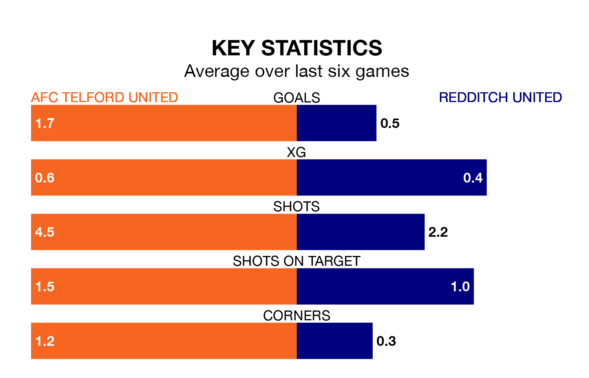

Redditch United make the journey to the New Bucks Head Ground to play AFC Telford United on Friday looking to pick up points to end their four-game losing streak.
Redditch's struggles have left them with six points from their last six Southern League Premier – Central matches, while their opponents have earned 13 from a possible 18.
Telford United are third in the table after 35 games, of which they have won 17 and drawn 11, earning 62 points.
Redditch are three places behind the Bucks in sixth, with 18 wins and six draws putting them on 60 points.
With 54 goals in 35 games so far this season, the hosts are scoring at the league's average rate with 1.5 goals per game. And they are conceding fewer than average, letting in 31 goals at a rate of 0.9 per game.
United are also average scorers, with 1.5 goals per game. They have conceded 1.3 goals per game.
Telford United's last match was on Saturday, a 1-1 draw against Hitchin Town.
Redditch lost 3-0 against Leamington last time out, also on Saturday.
Updated: 12:39 (UTC), 26/03/24